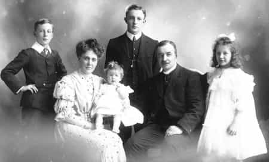

DB is a dating and relationship expert for men. Need more help with confidence, conversation or approaching women? DB recommends TheModernMan.com


Life has definitely changed a lot in the last one hundred years.
Back in 1914, a man could follow a set life path and not have to worry too much about the slowly changing world around him. It was clear that he needed to grow up, get a job, get married, have a family and then prepare for retirement and death. Yet, for a man in 2014, life isn’t so simple and straightforward anymore.
Here are just a few of the many differences between being a man in 1914 vs. 2014:

In 1914, the highest recorded divorce rate in the USA was 10%, with the rate in most other countries being way below that amount. A man would be almost certain that when he got married, he and his wife would stay together until death. When a couple said, “Till death do us part” at the altar, it was a promise they were usually able to keep. Divorce was considered shameful, sinful and blasphemous, so even if a couple were unhappy in their marriage, they would stick together until the end.

Divorce is now considered acceptable by many people and is sometimes encouraged by TV drama shows that glamorize the process of a woman divorcing an unsatisfactory husband, receiving her divorce payout and then finding a new and better man after getting Botox and a boob job. Statistics vary, but most suggest that a marriage beginning in 2014 has a 50% chance of ending in divorce anytime soon.
In many countries, the law requires that a man give his ex-wife approximately 50% of his assets (sometimes more) in a divorce settlement payout, which is enough to turn most men off the idea of marriage. Many men in 2014 wish that relationships could be like they were back in 1914, but the game has changed and relationships are no longer as certain as they once were.
A man was expected to be strong mentally, emotionally and physically. He was the leader of the family or the “man of the house.” Women were encouraged to respect him and follow his lead. The man was responsible for “bringing home the bacon” and the woman was responsible for cooking, cleaning and taking care of their offspring. Generally speaking, his woman was completely reliant on him for her survival and protection and was considered to be a “good, upstanding woman” if she devoted herself to him. As a result of her position in society, a woman in 1914 needed a man more than anything else in life.
A man is still expected to be strong mentally, emotionally and physically. If he wants to be the man of the house, he has to earn and then maintain that level of respect from his woman. His woman isn’t reliant on him for her survival or protection because she can now earn her own money, be supported by a government and be protected by the police and media. These days, women are often encouraged to follow their own dreams rather than devoting themselves to a man. A man is often seen as an “optional extra” rather than an “absolute necessity” in the life of a woman, which has left many men in 2014 feeling confused about their value and purpose in a woman’s life.
According to statistics from Berkeley University in California, life expectancy for an American man in 1914 was a measly 52, with some men of course being able to live to 70-80+. Back then, a man had an almost certain life path all the way to death: Grow up, get a job, find a wife, start a family, retire and then he would definitely die. He could literally prepare his mind for death and accept that it was “how it is supposed to be.” Science could not save him from death, so he turned to religion instead and hoped for an afterlife.
According to Wikipedia, life expectancy in 2014 for an American man in California is 80.8 years of age. All around the world, life expectancy is rising at a steady rate and it is predicted to continue going up every year from now on. In 2014, a man now has an uncertain life path on his way to death: Grow up, do whatever he wants and then he may or may not die at around the age of 80. If what TV documentaries like Through the Wormhole and Brave New World are telling him is true, then he may be looking at a life expectancy of 100-150 years if he can make it to 2045, when many scientists expect it to be possible to significantly increase human lifespan.
According to the best scientific minds in the world today, it will soon be possible to reverse ageing and bring our bodies back to being a health 30 year old, even if we are 80. It may be just be science fiction, but it also might also be coming true very soon. Even if a man in 2014 disagrees with the idea staying alive for longer, the questions of, “Do I actually want to stay alive for longer? What will I do with all of that extra time? Will my marriage last?” are now things that he has to face up to and consider.
Most men believed in one religion and thought that every other religion was wrong. Anyone who didn’t believe what he did was obviously an idiot and would regret it in the afterlife. A man’s beliefs about the “meaning of life” was usually shaped by the naive and secular society around him.

Most men in 2014 have now realized that humans have been guessing about the meaning of life for a very long time. According to Wikipedia, there are an estimated 4,200 different religions in the world and each of them think that they are right about the meaning of life. Eye-opening TV documentaries like I Was Dead (Discovery Channel) and reality shows like Long Island Medium (Home and Health Channel) argue that there is an afterlife. However, since no one really knows the true real meaning of life, most men in 2014 have decided to ignore outdated religious dogma and think for themselves.
Humans were the smartest beings on the planet. We were destined to rule the world forever. We were forming stronger governments, getting better at enforcing laws and improving the efficiency and effectiveness of society. Men were in charge of pretty much everything and most women liked it that way.

Science is telling us that AI (Artificial Intelligence) will become sentient by 2040 and when that happens, it will be able to link minds with other AI to become millions of times smarter than humans. It may get to the point where humans use AI as a tool to better run the world, or AI may decide that taking orders from us on how to run the world is like humans taking orders from cows.
We humans are already using artificial intelligence to better run the world in 2014. For example: Google is a non-sentient AI that sorts through millions of websites, articles, videos, audio clips and documents to return an accurate result to your search within seconds. We humans are using Google’s artificial intelligence to become more informed and effective in life. In 1914, people had to ask each other for advice in person and would then be limited to the few opinions they could find. In 2014, a man can search through millions of opinions and find experts in any field within seconds.
Right now, humans are in control of artificial intelligence (e.g. Google), but when AI can think for themselves like we do, they may begin to actively influence, direct and possibly even lead humanity forward. Maybe that will be a good or bad thing in the future, but for a man in 2014, the growing influence of AI is now a significant part of his reality, whether he likes it or not.
A man’s immediate family, his priest, newspapers and the small number of books available at the time were the main influences on his thinking. His perspectives on life were limited to his 1914 imagination and if he had any “out there” ideas about life and the future, most people would think that he was crazy.
A man now chooses who he learns from and why. He is free to believe whatever he wants, say whatever he wants and argue about whatever he wants without having to worry about being burned at the stake. If he thinks in a certain way, he can be sure that there will be thousands, if not millions of people just like him who are talking about the same type of thing online. Instead of having to process the opinion of a few, potentially closed-minded people in his immediate life, a man in 2014 has to sort through the opinions, ideas and thoughts of people from all walks of life that coming at him in all forms of offline and online media.
Most people think that their way of living life is the “correct” way and that everyone else should just shut up and copy their way of doing things. If you asked the Japanese Samurai whether they would ever stop living the samurai lifestyle, they may have wanted to disembowel you for disrespecting their noble culture. To them, the way of the samurai was the only way, and for a time it was a great way of living life, but things changed and the samurai became irrelevant.
If you asked the noble gentlemen of early England whether they would ever consider recording a video of their girlfriend giving them a blow job, watching a bloody UFC fight or playing a computer game like Grand Theft Auto, they may have suggested that you weren’t a real man and needed to be taught a stern lesson from your parents for thinking in a different way to the gentlemanly culture that they firmly believed in. Yet, things changed and those top-hat wearing gentlemen became a thing of the past.

Cultural change has been going on for as far back as we can look back into human history and it will continue. If you feel as though your way of living life is “correct” and “the way it should be,” then you might be in for a rude shock when the world around you continues to change in different directions to where you are going. Just because life was once about getting a house with a white picket fence, getting married, having two children, a stable job and a good car, it doesn’t mean that it will continue being that way forever.
Most people I know hate talking about this sort of thing because it makes them feel uncertain and begin to question their choices in life. They want to feel secure in their choices and don’t want the world to change anymore than it already has. Yet, the truth is that you can never be certain about whether or not you have chosen the right path in life; you just have to do what you really love doing and then hope that it works out.
If you’re looking for some certainty from this article, here is what I think you can be “fairly certain” of over the next 30 years:
Just like the age of the samurais came to an end, so will the current cultural trends that many people believe as being the “right way to live life.” The hippies came and went, just like the “Me Generation” of Facebook addicts will slowly stop taking so many selfies. Things will keep changing and that is okay. You are not your culture and your culture is not eternal; you are you and your culture is just a passing phase in the history of humanity.
According to science, the Earth’s climate has been changing for billions of years without human intervention. Our current industrial society is definitely adding to the warming, but “global warming” is not all our fault. Climate change will continue to happen until we get to the point where we can control the climate and weather, which will hopefully happen when we master nanotechnology and have the help of sentient AI (Artificial Intelligence). By the way, I understand that AI or “controlling the climate” may sound sci-fi or impossible to some men, but the Internet, smart phones and computer games would have seemed that way to a man in 1914.
If you pay too much attention to the media, you may begin to believe that we’re all doomed, that food will run out very soon and the water supply will dry up and cause a war. Yet, if you listen to people who are at the forefront of business and technology, you will know that we plan to use nanotechnology to clean the water system, rebuild forests and create food from any material. Intelligent-looking people on TV will say that we’re all doomed, but we’re most-likely going to continue to gain more and more control over our world, just like we have been doing all throughout human history. We will run into problems along the way, but we always find a way to improve and make things better for humanity.
Many people will try to convince you that unless you copy their way of living life (e.g. get married as soon as possible, have a family, retire and then get ready to die), then you are “doing it wrong.” In my opinion, life is no longer that simple and each man should feel free to choose the life path that makes most sense to him, while also being wise enough to know that he may have to adapt or completely rethink his life plan as the world changes around him.
People may knock your way of living life today, but in 30 years time when the world has changed even more than it has up until 2014, they will applaud you for believing in yourself and doing what you wanted to do all along. People will eventually realize that there is no “one way” of living life, so just do whatever makes you feel the happiest and most fulfilled and you won’t end up feeling like a failure.
Personally speaking, I live my life as though I will die at 80 (i.e. stay with my current girlfriend for life, have a family and grow old together), but with the knowledge that I may get to live a lot longer, if what science is telling us is true. If my girlfriend and I break up in 40 years time instead of “till death do us part,” I will not consider myself a failure because I didn’t live the “set path life” of a man from 1914. Right now, it might seem like a “fail” to only stay together in a relationship with a woman for 40 years, but by 2054, I think that it will become totally normal whether we like it or not.
I may end up dying next week in a car accident or living for 500 years and then travelling throughout the universe in a spaceship built by super-intelligent AI, but right now, I’m feeling happy about the fact that my girlfriend cooked up a nice breakfast this morning and that I have the privilege to post up my thoughts on ROK.
I’m not afraid of the future because I don’t care if things keep changing like they always have. I’m not attached to the current culture because I know that cultures have changed drastically throughout the ages. As a man in 2014, I look forward to the potentially amazing future ahead and I also accept that I probably won’t ever get to live life like a man did in 1914, unless I go into a virtual reality that simulates that time period. Just imagine men from 2014 running game on women from 1914—fun times ahead.
It’s hard to write a conclusion to this because what I’m writing about here is that there is no conclusion. A man in 2014 is living in a time when his future is open and uncertain and where the culture around him is rapidly changing. Most of us have grown up being shown a way of life from a different time period that just doesn’t make much sense anymore, even though many of us may want it to fit into our current culture.
I’ll close off this article by saying that for many millennia, we humans have been making this up the meaning and purpose of life as we’ve been going along and we still haven’t got it all worked out. Life as we know it today will be history and old fashioned in the near future. The best that a man in 2014 can do is live his life by choice, rather than blindly copying what everyone else is doing around him. Do what makes you the happiest and most fulfilled and laugh at anyone who tells you that you’re “doing it wrong.” There is no “one way” to live life, but there are now many ways to live life that will make you feel happy and fulfilled as a man.
Read More: How To Run Game In 2014